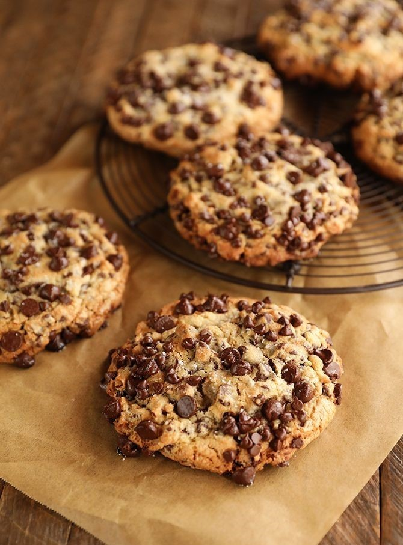
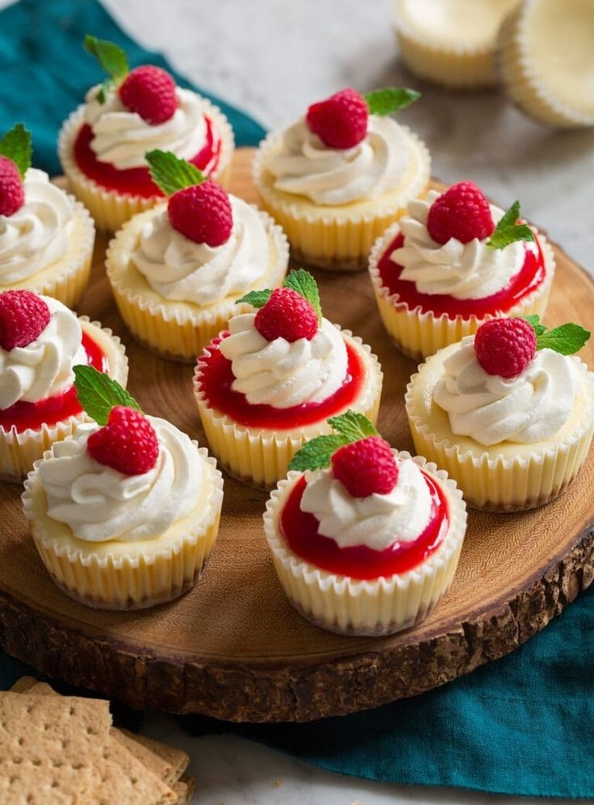

Lazy Cake
- Crush/ break the biscuits into small pieces. Place them in a large bowl. if you are using nuts, crush them as well and add to the bowl. set aside.
- In a saucepan combined sugar, butter, cocoa powder and water/coffee. Place the saucepan over medium heat and bring to a boil. Cook for 5-6 minutes, stirring constantly.
- Pour chocolate syrup over the biscuits and stir until well coated.
- Transfer the mixture into a 9-inch (23cm) pan. Press firmly to create flat surface cake. Refrigerate while making the ganache.
- Make chocolate ganache: chop the chocolate and place in a heatproof bowl. In a small saucepan heat the cream, when starts to simmer remove from heat and pour over the chocolate. Let sit for 1-2 minutes and stir until melted and smooth.
- Pour the ganache over the cake and refrigerate for at least 2-3 hours before serving.
- Decorate with nuts.
Instructions:

Cookies
- In a large bowl, whisk together the sugars, salt, and butter until a paste forms with no lumps.
- Whisk in the egg and vanilla, beating until light ribbons fall off the whisk and remain for a short while before falling back into the mixture.
- Sift in the flour and baking soda, then fold the mixture with a spatula (Be careful not to overmix, which would cause the gluten in the flour to toughen resulting in cakier cookies).
- Fold in the chocolate chunks, then chill the dough for at least 30 minutes. For a more intense toffee-like flavor and deeper color, chill the dough overnight. The longer the dough rests, the more complex its flavor will be.
- Preheat oven to 350°F (180°C). Line a baking sheet with parchment paper.
- Scoop the dough with an ice-cream scoop onto a parchment paper-lined baking sheet, leaving at least 4 inches (10 cm) of space between cookies and 2 inches (5 cm) of space from the edges of the pan so that the cookies can spread evenly.
- Bake for 12-15 minutes, or until the edges have started to barely brown.
- Cool completely before serving.
Instructions:

Mini cheesecakes
- Preheat oven to 350°F (177°C). Line a standard 12-count muffin pan with 9–10 liners. (For a mini muffin pan, see recipe note.) This recipe yields only 9–10 mini cheesecakes, so there will be 2–3 empty. You could skip the liners and spray the pan with non-stick spray or grease with butter, but the mini cheesecakes are pretty stubborn to release from the pan. I recommend using liners to make things easier.
- Make the crust: Combine all of the crust ingredients in a medium bowl. Mixture will be sandy. Firmly press a heaping Tablespoon of crust mixture into each liner. (I use closer to 1 and 1/2 Tablespoons of crust per mini cheesecake.) Pre-bake for 5 minutes.
- Make the filling: Using a handheld or stand mixer fitted with a paddle or whisk attachment, beat the cream cheese and granulated sugar together on medium-high speed in a large bowl until the mixture is smooth and creamy, about 1 minute. Add the sour cream, vanilla extract, and lemon juice then beat until fully combined. On medium speed, add the egg and beat just until combined. Batter will be thick. Divide the batter between all the liners. It’s about 1 Tablespoon per cheesecake.
- Bake until the edges are set and the centers only slightly jiggle, about 18–20 minutes.
- Set the pan on a wire rack and allow cheesecakes to cool at room temperature for 30 minutes, then transfer to the refrigerator and chill for at least 2 hours and up to 1 day. If chilling for longer than 2 hours, loosely cover the cheesecakes. The cheesecakes will slightly sink in the middle as they chill. It gives you room for toppings!
- Once chilled, add any desired toppings (see Note below) and serve. Cover and store leftover cheesecakes in the refrigerator for up to 5 days